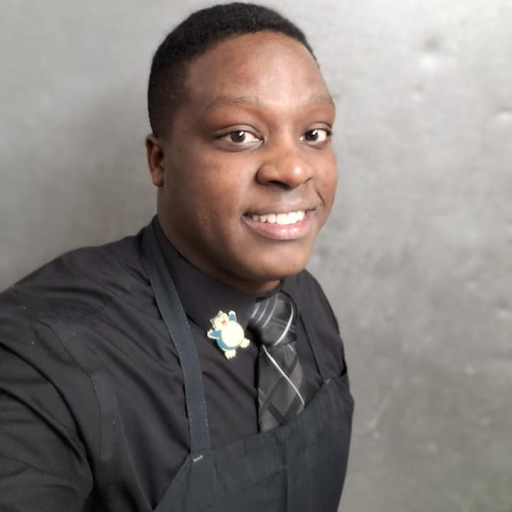

Meet The Team
Daniella Brandt - Research Lead

Daniella is a senior Computer Science major at Old Dominion University. She contributes her problem-solving and teamwork skills to the project while balancing interests in the medical field outside of technology.
Matthew Haydon - Designing Lead

Matthew is currently a senior at Old Dominion University, majoring in Computer Science. He is interested in pursuing a career in software development and game development after obtaining his bachelor's degree. In his free time, he likes to play video games, read, and spend time with his pets and family.
Jackson Garrett - Programming Lead

Jackson is a Junior at Old Dominion University. He has interests that span throughout the vast majority of the STEM universe, and is currently majoring in Computer Science. Additionally, Jackson is scheduled to graduate with three additional minors in Physics, Applied Math, and Computer Engineering. In his free time, he works with his peers in the game design club to create meaningful games.
Brice Bounds - Database Lead

Brice is currently a senior at Old Dominion University, seeking his Bachelor’s degree in Computer Science. He is interested in pursuing a career in database development. He is on the Men’s ODU Swimming Team. Some of his interests include watching football, hanging out with friends, and playing sports.
Ivan Gunn - Content Lead
Ivan Gunn is a senior Computer Science student at Old Dominion University. He has a strong interest in software development and enjoys working on both technical and creative projects. His passion is independent game development and writing creative stories, with the goal of crafting meaningful experiences.